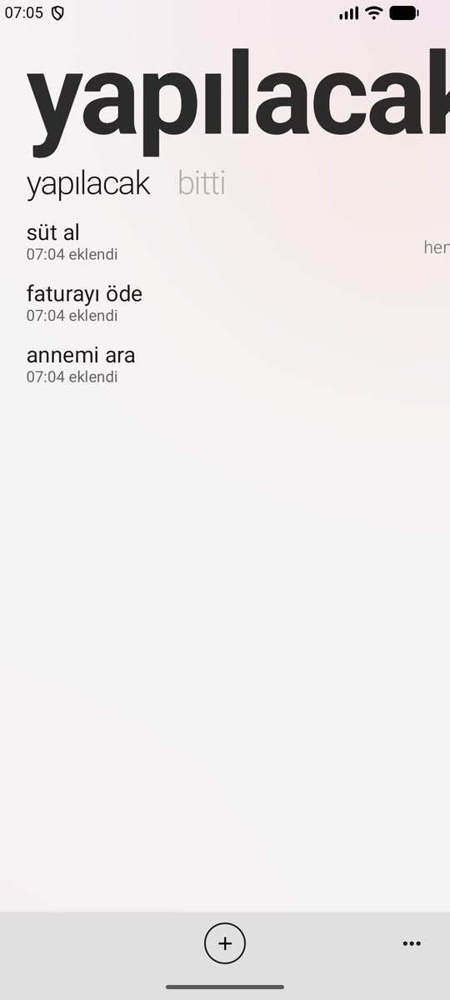
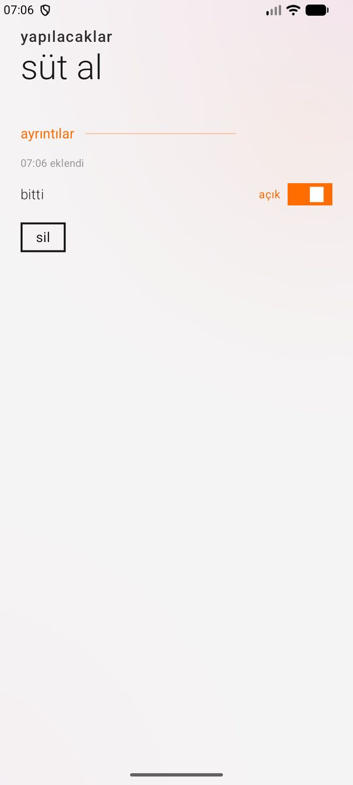
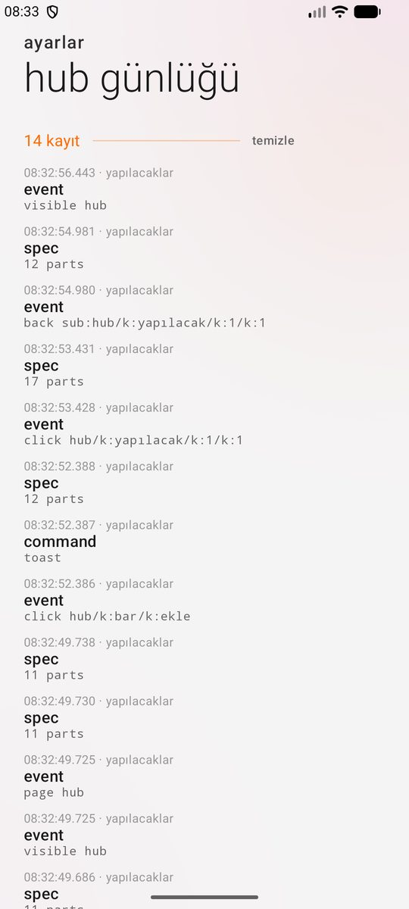
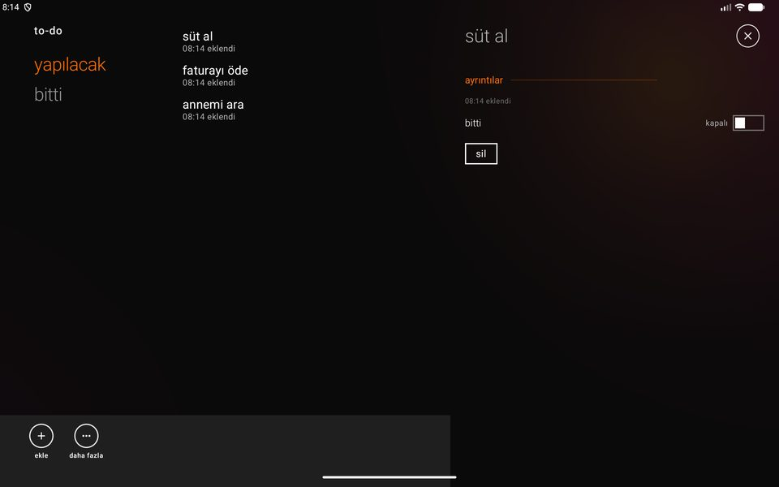
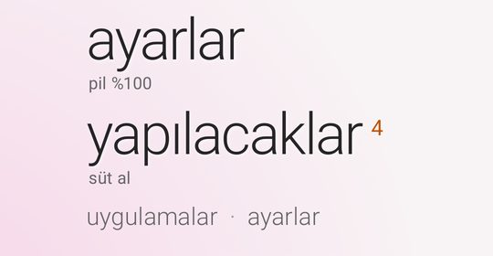
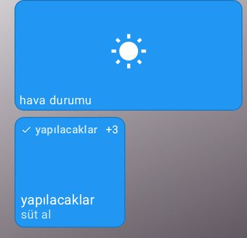
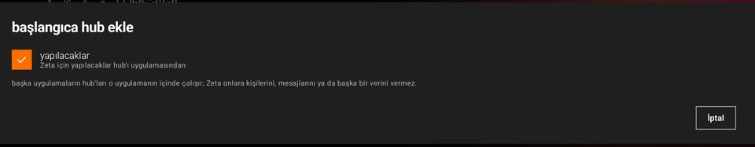

ZetaHubKit
Write a hub for Zeta. Your app describes it; Zeta draws it.



In short
Zeta is an interface suite rather than a launcher, and ZetaHubKit makes it a platform others can add hubs to. Your hub lives in an ordinary Android app. That app gives Zeta not a screen but a description: pages, lists, buttons, the bar, the live tile. Zeta draws it with its own parts:
- pages you swipe on a phone,
- headings on the left and a pane beside them on a tablet,
- the big title flying up from the list in Aura,
- a tile in Mosaic.

So the hub cannot be told from Zeta's own, and you do not write four layouts. Touches come back to your app; your code always runs in your own app, with its own permissions.
ZetaHubKit is Apache 2.0: free or paid, open or closed source. Other apps' hubs work in Zeta's free edition too.
1. Add it to your project
dependencies {
implementation("io.github.serkantkn:zetahubkit:0.1.0")
}The first release is being prepared for Maven Central. Until then, clone
the repository, run ./gradlew :hubkit:publishToMavenLocal
and add mavenLocal() to your project. Android 9 (API 28) or later; Kotlin 2.0 or later.
2. Declare the service
<service
android:name=".TodoHub"
android:exported="true"
android:icon="@drawable/ic_todo"
android:label="@string/hub_name">
<intent-filter>
<action android:name="com.serkantkn.zeta.action.HUB" />
</intent-filter>
<meta-data android:name="com.serkantkn.zeta.hub.protocol" android:value="1" />
</service>android:labelis the hub's name: lowercase and short ("to-do", "my parcels").android:iconshould be one single-colour shape; it is filled with the tile's ink. Without one, the name's first letter is used.- The app needs no other screen.
3. Describe the hub
class TodoHub : ZetaHubService() {
private var tasks by mutableHubStateOf(listOf(Task(1, "buy milk"))) // changing it describes the hub again
override fun hub(): HubSpec = zetaHub {
page(getString(R.string.page_open)) {
val open = tasks.filter { !it.done }
if (open.isEmpty()) empty(getString(R.string.nothing_to_do))
list(open, key = { it.id }) { task ->
item(task.title, subtitle = task.note, opens = { taskPage(task.id) })
}
}
page(getString(R.string.page_done)) { /* … */ }
bar {
action(getString(R.string.add), HubIcon.ADD) { add() }
menu(getString(R.string.clear_done)) { tasks = tasks.filterNot { it.done } }
}
liveTile {
count = tasks.count { !it.done }
line = tasks.firstOrNull { !it.done }?.title
}
}
private fun taskPage(id: Int) = subPage(title = find(id).title, key = "task$id") {
section(getString(R.string.details))
switch(getString(R.string.done), checked = find(id).done) { checked -> setDone(id, checked) }
button(getString(R.string.delete)) { delete(id); closeSubPage() }
}
}hub() runs again after every event, whenever a value kept with mutableHubStateOf changes,
and when you call invalidate(); ZetaHubKit sends the new description to Zeta. The whole working example
is in the repository: hubkit/sample.
4. Parts
| Part | What it is for |
|---|---|
page(heading) { } | A heading's page. Swiped on a phone, listed on the left on a tablet. |
item(title, subtitle, meta, image, count, opens, onLongClick, onClick) | A line of a list. opens opens a sub-page; in Aura the line's title becomes that page's title. |
list(items, key) { } | A changing list; key keeps each line in its place. |
section(title, actionLabel) { } | A heading, with an optional link at its end. |
text(text, style) | Words: TITLE, BODY or CAPTION. |
button(label) { } | A button. |
switch(title, checked, subtitle) { } | A switch. |
value(title, value) { } | A setting and its value. |
empty(message, actionLabel) { } | An empty page. |
notice(message, actionLabel) { } | A word to the person, on a line of its own. |
loading() | The loading dots. |
bar { action(label, icon) { }; menu(label) { } } | The bar: up to four commands with glyphs, any number in the menu. |
takeover { } | One screen in place of the pages (sign in, allow something). |
subPage(title, key) { } | A page over the hub; slides in on a phone, stands in the pane on a tablet. |
liveTile { count; line; title } | What the tile and the line in Aura say. |
From the service: openSubPage(page), closeSubPage(), toast(text),
openUrl(url) (https only, in Zeta's internet hub), share(text), closeHub().
Pictures are content:// (ZetaHubKit lets Zeta read them) or https://.
Need a part that is not here (a map, a chart, a player…)? Open an issue. Parts are added as hubs need them, and older hubs always keep working.
5. Live tile


While the hub is open, liveTile { } is enough. When something changes while it is closed (a job, a push, an alarm):
// inside the service: sends the description's liveTile
publishTile()
// or from anywhere
ZetaTiles.update(context, TodoHub::class.java) {
count = 3
line = "buy milk"
}Zeta takes it only for a hub the person has added, only from that hub's app, and at most four times a minute.
6. Language
Zeta's language may not be the phone's. While Zeta is connected, the service's resources are in Zeta's language:
getString gives the hub's words in the right one. Format dates and numbers with hubLocale.
7. Try it
- Install Zeta (from here) and your hub app on a phone.
- In Zeta, switch your hub on under settings › hub › other apps' hubs, or long-press the Aura list and use add a hub.
- Switch on developer mode in the same place. The hub log:
- shows connections, every description that arrives (with how many parts), touches and commands;
- marks errors and warnings in the descriptions.

You can check your description in a test of your own too (with Robolectric):
@RunWith(RobolectricTestRunner::class)
class TodoHubTest {
@Test fun describesItselfCleanly() {
val hub = Robolectric.buildService(TodoHub::class.java).create().get()
assertEquals(emptyList<Any>(), hub.validate())
}
}8. Rules and safety
- No code goes into Zeta. Zeta only reads the description; nothing in it runs. The hub's code runs in its own app.
- No hub is added without the person's say. The approval is tied to the app's signature; a build signed by someone else does not open.
- Data flows one way. Zeta gives a hub none of the person's contacts, messages or anything else. Ask for what you need in your own app.
- A hub talks only to Zeta. A release (non-debuggable) build answers only signed Zeta builds; while developing (debuggable) it answers any Zeta build.
- Limits:
- a description may have at most 4000 parts;
- the app must give its first description within five seconds;
- while closed, a tile may be written at most four times a minute.
- In the first version, other apps' hubs are not offered on a television.
Source and licence
ZetaHubKit's source, the example and the protocol's design notes are in the repository: hubkit/ · PLATFORM.md (in Turkish). ZetaHubKit is released under the Apache License 2.0; Zeta itself is under its own licence.